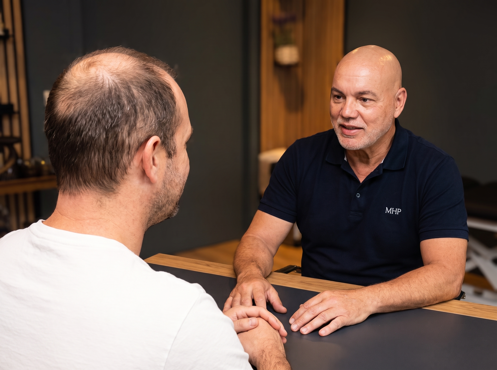
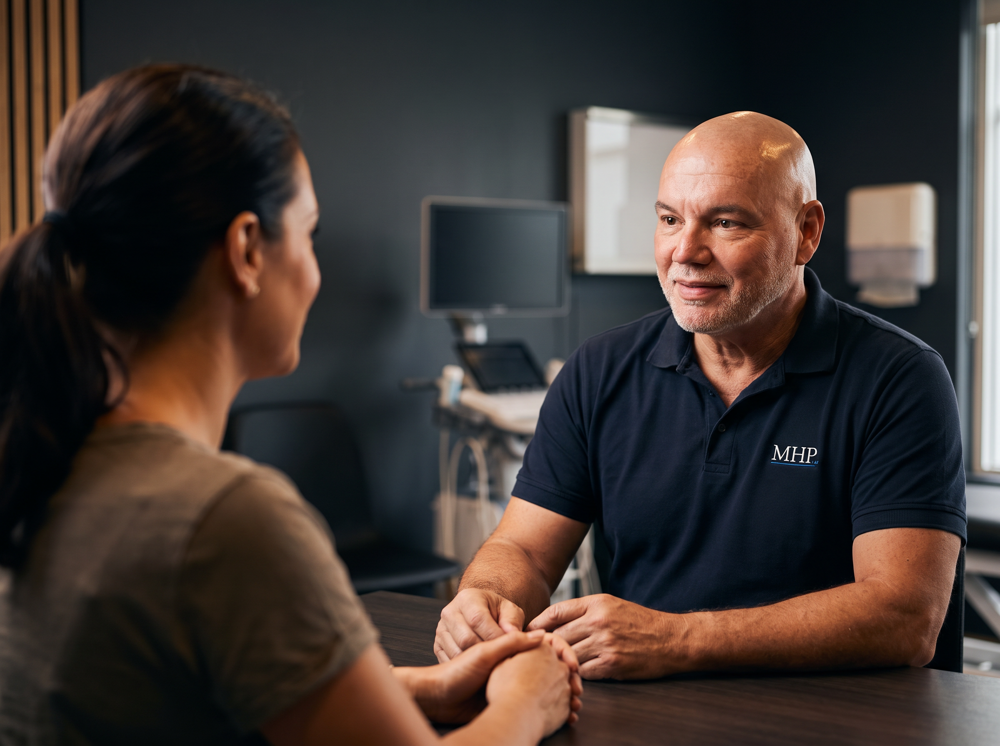

Correctie & Herstel


Elk traject begint met een persoonlijk consult — voor hoofdhuid én wenkbrauwen
Een te harde haarlijn. Wenkbrauwen die na een paar jaar oranje of grijsblauw zijn geworden. Pigmentpuntjes die te groot, te donker of te blauw zijn uitgevallen. Het komt vaker voor dan mensen denken — en het is bijna altijd een oplosbaar probleem.
Wat MHP Centrum onderscheidt, is dat wij pigment niet alleen aanbrengen, maar ook verwijderen. Beide disciplines onder één dak, bij één specialist. Daardoor hoeft het advies dat u krijgt niet te eindigen bij "er nog een laag overheen".
Tijdens het consult beoordelen we de kleur, diepte, dichtheid en plaatsing van het bestaande pigment, en de conditie van uw huid. Op basis daarvan volgt eerlijk advies: één van twee routes.
Route 1
Is het bestaande pigment qua kleur en plaatsing werkbaar, dan kan het vaak direct worden bijgewerkt: de vorm verfijnen, dichtheid egaliseren of de tint corrigeren met een aangepaste pigmentkeuze.
Route 2
Zit het pigment te diep, te donker of op de verkeerde plek, dan is er eerst ruimte nodig. We verwijderen het pigment met laser, geven de huid de tijd om te herstellen, en bouwen daarna opnieuw op — vanaf een schone basis.
De tweede route duurt langer en vraagt geduld, maar levert vrijwel altijd een beter eindresultaat op dan corrigeren over pigment dat er eigenlijk niet had moeten zitten. Welke route van toepassing is, bepalen we samen tijdens het consult — niet vooraf via de telefoon of een foto.
Na een laserbehandeling is de huid bezig met opruimen en herstellen: het gefragmenteerde pigment wordt afgevoerd en het huidweefsel krijgt de kans zich te vernieuwen. Nieuw pigment aanbrengen in een huid die nog volop aan het herstellen is, geeft een onvoorspelbaar resultaat — de kleur kan anders inhelen dan bedoeld en de opname is minder gelijkmatig.
Daarom wordt tussen verwijderen en opnieuw opbouwen bewust rust ingebouwd. Hoe lang die periode is, verschilt per persoon en per situatie; dat wordt tijdens uw traject beoordeeld en met u afgestemd. Zie ook de gids over laser tattoo verwijdering voor hoe het verwijderproces zelf werkt.
Oudere permanente make-up verkleurt vaak: warme pigmenten kunnen oranje of roodachtig worden, koude pigmenten grijs of blauwig. Ook de mode verandert — een dikke, hard afgetekende vorm van tien jaar geleden past zelden nog bij het gezicht van nu. Na correctie of verwijdering kan een verfijnde hairstroke- of powder brow-behandeling een veel natuurlijker resultaat geven.
Bij SMP zijn de meest voorkomende klachten een te lage of te rechte haarlijn, puntjes die te groot zijn uitgevoerd (waardoor het patroon van dichtbij niet natuurlijk oogt), of pigment dat naar blauw of grijs is verkleurd. Afhankelijk van de situatie kan dit worden verzacht, verfijnd of eerst verwijderd voordat een nieuwe SMP-behandeling wordt opgebouwd.
Plan een vrijblijvend consult. We beoordelen het pigment en vertellen u eerlijk welke route mogelijk is.
Plan een consult